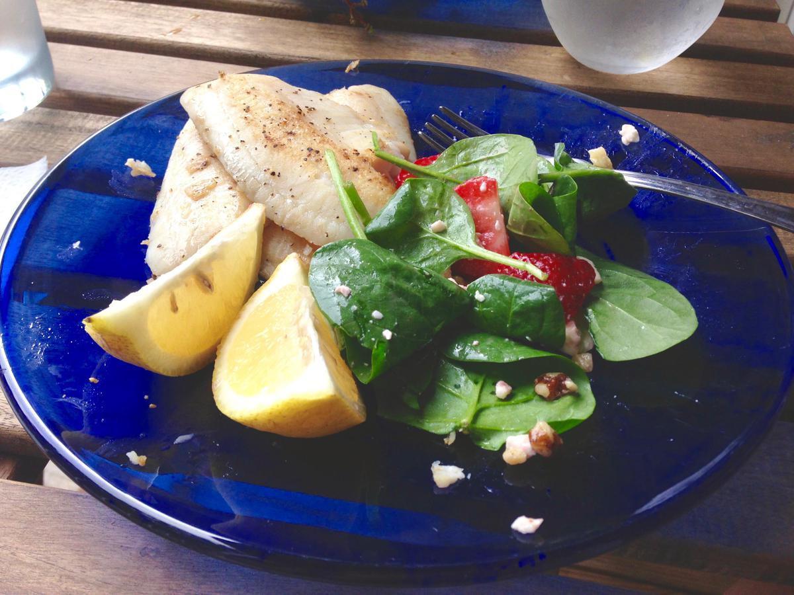

Personal rating: 3 / 5

Feta: arugula/spinach, red onion, tomato, cucumber, feta, dressing (olive oil + lime)
Feta+: (above) + strawberries or black beans
Strawb: spinach, strawberry, feta, walnuts/pecans/almonds
Greek: lettuce, cherry tomatoes, peppers, cucumber, onion, feta, (opt: chickpeas)
Caesar: lettuce, Parmesan, chicken, croutons
Rotisserie: lettuce, tomato, cucumber, pepper, etc, rotisserie chicken
Sliced almonds
Flavored Pecan Crumbles
Cherry Tomatoes
Sliced Celery
Green Olives Stuffed with Garlic
Canned Chicken
Croutons
Baby Carrots
Cucumber
Radishes
Sliced Pickled Beets
Try olive oil and lemon
Add sliced nuts, such as almonds or walnuts
Add beans, such as Chickpeas (drained), which could also be roasted in paprika. Also try black beans, cannelini, etc.
Mix in grains such as Quinoa, couscous, brown rice, farro, etc.
Make sure to add spinach, mustard greens, and kale
Add melons, pears, etc.
From the Washington Post, this is the ideal ratio:
Some examples for Spring
For a broader framework, see https://newsletter.ethanchlebowski.com/p/satisfying-salad-blueprint